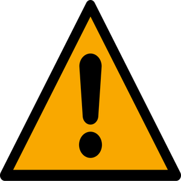
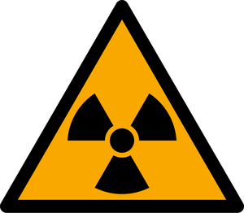

Lab Safety Handbook
CEDT / Engineering Physics
This page summarizes the McMaster University Laboratory Manual, the official safety reference issued by University Health and Safety (UHS), and highlights what is specifically relevant to CEDT and Engineering Physics facilities. It replaces the older "Faculty of Engineering and Faculty of Science Safety Handbook (Version 2.0)" previously hosted on this site, which is now out of date.
1. Responsibilities for Safety
Safety at McMaster is a shared responsibility between the University, supervisors, and individual workers. The Occupational Health and Safety Act (OHSA) sets out specific legal duties for each:
Employer (McMaster University)
- Ensures equipment, materials, and protective devices are in good condition.
- Provides information, instruction, and supervision to protect worker health and safety.
- Appoints competent supervisors and informs workers of known hazards.
- Maintains a written health and safety policy, reviewed at least annually.
Supervisors
- Ensures workers follow the Act and use required protective devices.
- Advises workers of potential or actual danger.
- Provides written instructions on protective measures and procedures where required.
- Is responsible for workplace-specific training, including chemical handling, equipment safety, and procedures unique to a given project or lab.
Workers (including students and researchers)
- Works in compliance with the Act and uses required protective equipment.
- Reports any hazard, defect in protective gear, or contravention of the Act.
- Does not remove or alter any protective device.
- Does not operate equipment in a way that could endanger themselves or others.
See this site's dedicated pages on Employer, Supervisor, and Worker responsibilities for more detail.
Right to Refuse Unsafe Work
Any worker who believes a task, piece of equipment, or workplace condition is likely to endanger themselves or another person has the right to refuse that work, following the specific procedure set out in Section 43 of the OHSA. Concerns should first be raised with your supervisor; if unresolved, they can be brought to the Joint Health and Safety Committee (JHSC), and ultimately to UHS. See Employee Rights for the right to refuse work alongside the right to know and the right to participate.
2. Emergency Procedures
 Fire
Fire
- Immediately vacate the building via the nearest exit route. Do not use elevators.
- If a fire breaks out in your work area, shout "Fire!" and pull the nearest fire alarm.
- Only attempt to extinguish a small fire if you can do so promptly and safely; otherwise evacuate and close the door behind you.
- Dial 88 (or 905-522-4135 from a cell phone) and give your exact location and details.
- See RMM 1201: Fire Safety Plan for full building-specific procedures.
Clothing on Fire
- Douse with water from the nearest safety shower immediately, or
- Roll on the floor, or
- Smother with a fire blanket (lay the person down first, do not wrap a standing person).
- Do not use a fire extinguisher directly on a person.
 Chemical Spill on Body / in Eyes
Chemical Spill on Body / in Eyes
- Flush the affected area with water immediately. Use the emergency shower for skin contact, or flush eyes for at least 15 minutes at an eye-wash station.
- Remove contaminated clothing.
- Call 88 if medical aid is required, and bring the Safety Data Sheet (SDS) for the chemical involved.

Chemical Spill (Lab)- If you can safely manage the spill: eliminate ignition sources, contain the spill with appropriate absorbent material, and ensure fume hoods are running.
- If the spill is large, generates hazardous vapours, or you are unsure: evacuate, post warning signs, and call 88.
- Refer to the current Chemical Spill Response Guidelines (Minor and Major Spills) for the full decision process.
 Medical Emergency
Medical Emergency
- For minor injuries, seek first aid and follow up with a medical professional if needed.
- For major injuries, call 88, describe the emergency and location, and stay with the injured person. Do not move them unless they are in further danger.
3. WHMIS & Safety Data Sheets (SDS)
WHMIS (Workplace Hazardous Materials Information System) is Canada-wide "right to know" legislation: anyone working with or near hazardous materials must complete WHMIS training before starting work, and must know how to read product labels and Safety Data Sheets.
Material Safety Data Sheets (MSDS) have likewise been replaced by the standardized Safety Data Sheet (SDS) format. Before working with any hazardous material, you must read its SDS. Some materials also carry additional legal requirements — see Designated Substances for hazards like asbestos and lead. SDS access points for CEDT / Eng Phys include:
- The SDS Database Search tool (3E Database, accessible university-wide).
- Your lab's own SDS binder or local inventory (check with your supervisor).
- See the SDS Info page on this site for more detail.
For a refresher on current pictograms and label elements, see WHMIS Pictograms and Hazards and WHMIS – Key Updates.
4. Personal Protective Equipment (PPE)
For any work in a laboratory, appropriate PPE is required, typically a lab coat, eye protection, gloves, and closed-toe footwear at minimum. Your supervisor is responsible for identifying and supplying the PPE required for your specific work; you are responsible for using it correctly and maintaining it in good condition.
 Gloves
Gloves
Different glove materials offer different chemical resistance. Check compatibility before starting work. Nitrile and neoprene gloves offer broad chemical protection, but always verify against the specific chemical's SDS. Remove gloves before leaving the lab.
 Eye Protection
Eye Protection
Contact lenses should not be worn while working with chemicals. Depending on the task, safety glasses, chemical splash goggles, or a full face shield may be required. Follow your supervisor's procedures for the specific hazard.
 Lab Coats
Lab Coats
Lab coats should be worn when working with hazardous materials and should not be worn outside the lab (except when moving directly between labs). Contaminated lab coats should never be laundered at home.
See the Protective Equipment page on this site for the full list of PPE available through CEDT/Eng Phys and how to request it.
5. Fume Hoods & Lab Equipment
Properly functioning fume hoods are a critical safety device. Follow these core operating guidelines:
- Do all work involving hazardous or malodorous materials inside an operating fume hood.
- Keep the sash closed whenever the hood is on and unattended, and during any non-"hands-on" portion of an experiment.
- Keep chemicals and equipment at least 6 inches behind the sash.
- Never use a hood if the exhaust system is not running.
- The hood is not a substitute for PPE. Gloves, eye protection, and other PPE are still required.
For specialized fume hood types specific to certain processes, see Guidelines for the Safe Use of Ductless Hoods.
If you are closing out or repurposing a lab space, the Lab Decommission guide outlines the required steps for safely clearing equipment and hazardous materials.
6. Chemical Storage & Waste Disposal
Store chemicals according to compatibility, not alphabetically. Keep oxidizers, water-reactives, flammables, acids, and bases separated from one another, and ensure all containers are in good condition and properly labelled. See Chemical Hazards for hazard categories, HF-specific precautions, and gas cylinder handling.
For complete, current chemical storage and compatibility guidance, including specific rules for peroxide-forming chemicals, perchloric acid, and corrosives, see the official Storage of Chemicals in the Lab guideline.
For chemical and biohazardous waste disposal procedures specific to your area, see the Waste Management page on this site, and McMaster's Waste Disposal Processes page for chemical and biohazardous waste.
Maintaining Your Chemical Inventory
All hazardous materials must be logged in McMaster's Chemical Inventory System and kept up to date. New purchases should be added immediately, and disposed items removed.
7. Compressed Gases & Cryogens
- Cylinders must be properly secured at all times, and the valve protection cap kept on when not connected to a regulator.
- Never store full and empty cylinders together.
- Move cylinders only with a suitable cart. Never lift by the collar.
- Toxic, flammable, or corrosive gases must be used in a properly functioning fume hood.
Cryogens (e.g., liquid nitrogen) present additional hazards: asphyxiation, frostbite, and pressure-related explosion risk. Always wear a face shield and insulated gloves, and use only approved containers designed to withstand extreme cold.
This is especially relevant for CEDT cleanroom and growth lab processes. See the Hydrogen Fluoride Emergency Protocol if your work involves HF, and the Mandatory Training page for the current Gas Cylinder and Hydrogen Fluoride course requirements.
8. Radiation, Laser & Electrical Safety

Radiation & X-RaysAll ionizing radiation matters (isotopes, X-ray generators) are governed by Health Physics. Radiation safety policies must be strictly followed, and warning signs displayed near any X-ray source. See Radiation Hazards for full detail.
 Laser Safety
Laser Safety
- Always wear eye protection rated for the specific wavelength and power level in use.
- Never look directly at the beam or pump source.
- Keep beams at or below waist height where possible, and post warning signs in laser work areas.
See Laser Hazards for hazard classifications, exposure limits, and protective eyewear requirements.
 Electrical Safety
Electrical Safety
- All electrical equipment must be properly grounded and CSA-approved (or an equivalent recognized standard).
- Never remove the ground pin from a 3-prong plug.
- Only qualified, trained personnel should repair or modify electrical equipment.
- Frayed wires or cords must not be used.
See Electrical Hazards for shock and fire risk detail specific to CEDT/Eng Phys lab equipment.
These hazards are directly relevant to CEDT cleanroom and growth lab equipment. See Hazard Awareness for facility-specific guidance, and the Mandatory Training page for Laser Safety and Basic Electricity course requirements.
9. Incident Reporting
An "incident" includes any accident, injury, or near-miss, even if no one was hurt. All incidents must be reported to your supervisor as soon as possible, and a formal Injury/Incident Report completed within 24 hours.
- The report may be completed by the person involved, a witness, or the supervisor.
- It must be signed by both the supervisor and the person reporting.
- For critical injuries, the supervisor must immediately notify UHS and ensure the incident scene remains undisturbed until cleared.
See the Incident Reports page on this site for full instructions and where to submit the form.
Full Handbook & Related Resources
The summaries above are drawn from the current McMaster University Laboratory Manual and the standalone guidance documents maintained by University Health and Safety. These are the authoritative sources; always check them directly for full detail, as they are updated more frequently than this page.
- McMaster University Laboratory Manual
- UHS Lab Safety
- Chemical Spill Response Guidelines
- Storage of Chemicals in the Lab
- Hydrogen Fluoride Emergency Protocol
- Guidelines for the Safe Use of Ductless Hoods
- Safe Handling of Azides
- Potentially Explosive Chemicals in the Laboratory
- Transporting Chemicals for Demos, Lectures, or Similar
- Lab Decommission
- Lab Safety Checklist
- McMaster Biosafety Office